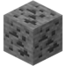
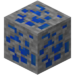
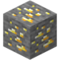
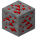
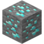
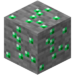

Руда (англ. Ore) — тип блоків в Minecraft. З руд при руйнуванні їх відповідним кайлом випадає або будь-яких корисних викопних (наприклад вугілля або редстоун), або сам блок руди, з якого можна отримати матеріал шляхом переплавлення в пічі або плавильної пічі. Руди генерується, замічаючи собою блоки камню або (у випадку з рудами Нижнього світу) блоки адского камня. Руди генерируються жилами, параметри яких — розмір, поширеність і можлива висота генерації — завсити від кожної конкретної руди.






